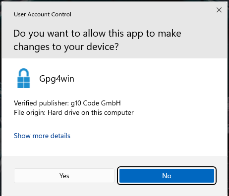
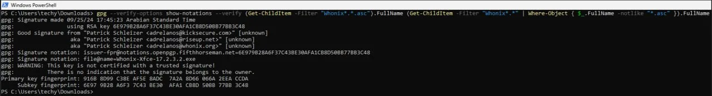

We believe security software like Whonix needs to remain Open Source and independent. Would you help sustain and grow the project? Learn more about our 14 year success story and maybe DONATE!
Verify the images using macOSDocumentationVirtualBox Testers Only VersionPrevious page: Verify the images using macOSIndex page: DocumentationNext page: VirtualBox Testers Only VersionVerify Whonix Virtual Machine Images in Windows

Instructions for OpenPGP Verification of Whonix Images using Windows
 Whonix Windows Installer is currently unavailable.
Stay Tuned for news.
Whonix Windows Installer is currently unavailable.
Stay Tuned for news.
 Testers only!
Testers only!
Context
- Digital signatures are a tool enhancing download security. They are commonly used across the internet and nothing special to worry about.
- Optional, not required: Digital signatures are optional and not mandatory for using Whonix, but an extra security measure for advanced users. If you've never used them before, it might be overwhelming to look into them at this stage. Just ignore them for now.
- Learn more: Curious? If you are interested in becoming more familiar with advanced computer security concepts, you can learn more about digital signatures here: Verifying Software Signatures
Usability
Due to Conceptual Challenges in Digital Signatures Verification and impracticality, unpopularity of digital software signature verification on the Windows platform, this is a cumbersome process. None of these issues are specific to Whonix or caused by Whonix. [1]
To keep a system secure and free of malware it is strongly recommended to always verify software signatures. However, this is very difficult, if not impossible for Windows users. Most often, Windows programs do not have software signature files (OpenPGP / gpg signatures) that are normally provided by software engineers in the GNU/Linux world.
Most other vendors of software on the Windows platform are either unaware or ignore this issue. The Whonix project makes an effort to document and cope with the mess on the Windows platform.
Introduction
This page includes documentation on how to securely acquire Gpg4win - an application which can be used to verify digital software signatures provided by the Whonix project and other software.
Use either option A) or B) or C).
A) UAC (recommended)
When trying to run the installer on Windows, the User Access Control dialog will show the publisher. (If you have disabled User Access Control use a different method).

B) Using SignTool to verify Gpg4win:
SignTool is a Windows platform-focused tool provided by Microsoft which can be used to verify software digital signatures.
GnuPG is a complete and free
implementation of OpenPGP that
allows users to encrypt and sign data and communications. It is popular
on Windows, macOS, and Linux platforms. Gpg4win is a graphical front end for
GnuPG that is used for file and email encryption in Windows. The
verification process for the Whonix Windows Installer includes securely
downloading and verifying the gpg4win package. Once
completed, GPG can be used from the command-line to verify the Whonix
Windows Installer.
Download and installation of SignTool (from the Microsoft website over TLS) and verification of Gpg4win using SignTool might be considered optional. This is because both SignTool and Gpg4win (downloaded from the Gpg4win website over TLS) are only downloaded over TLS, a very basic form of authentication. The argument for this is debatable. "It would be much more unlikely for a massive company like Microsoft to be compromised and serve malicious software than gpg4win server." [2] Some browsers might use Key Pinning for microsoft.com but unfortunately for gpg4win.org, this would not be eligible.
Therefore, optionally, the user might decide to skip the SignTool step and simplify as follows.
C) Not using SignTool to verify Gpg4win:
- Download and install Gpg4win.
- Import the developer's GPG signing key into Gpg4win.
- Verify the Whonix Windows Installer using Gpg4win.
The Gpg4win documentation also covers this subject.
- Check integrity of Gpg4win packages - Gpg4win website
- Check integrity of Gpg4win packages - Gpg4win wiki
Verify Whonix Images in Windows using Gpg4win
Install SignTools
SignTools is a Windows command-line tool that uses Authenticode to digitally sign files and verify both signatures in files and timestamp files. SignTool is available as part of Microsoft Windows SDK, which can be installed in just a few easy steps.
1. Download the latest version of the SDK for the most recent stable version of Windows from the Windows SDK and emulator archive. Make sure to select "Install SDK".
2. Double-click the downloaded file. There's no need to change the default installation path. Click "Next".
Figure: Installation Path

3. There's no need to enable Microsoft Insights collection, so select "No" and then click "Next".
Figure: Windows Kits Privacy

4. Install the necessary SDK package.
The Windows SDK installer provides a number of different packages
that can be installed. The only package needed for gpg4win
verification is Windows SDK Signing Tools for Desktop Apps
(SignTools). Choose it then press on "Install".
Figure: Select SignTools Package

5. Once the installation is complete, close the installer.
Figure: Installation completed

Download and Verify Gpg4win
SignTool can be used to verify the authenticity of the
gpg4win package itself.
Note: To simplify the SignTool verification process, be sure
to download the gpg4win package to the Downloads
directory.
1. Download the gpg4win package.
- Navigate to https://gpg4win.org/
- Download the latest version of
gpg4win.
At the time of writing gpg4win-4.3.1.exe was the latest
version.
2. Verify the gpg4win package by
running SignTool from the command prompt.
Now you need to manually locate signtool.exe and run it
as a normal *.exe file. You will need to provide a path to
your gpg4win-latest.exe file. Open PowerShell then add the
following:
Notes:
- Replace
[username]with your computer's username; the uploaded image uses "techy" as an example. - Replace gpg4win-
[version number].exe with the version of the downloaded gpg4win file..
& "C:\Program Files (x86)\Windows Kits\10\bin\10.0.22621.0\x64\signtool.exe" verify /pa "C:\Users\[username]\Downloads\gpg4win-[version number].exe".

 Warning: If verification fails, delete the
Warning: If verification fails, delete the
gpg4win package and repeat the download and verification
process again.
If verification passes, then you are ready to trust and install gpg
using this file, i.e., gpg4win-latest.exe.
Download the Whonix Signing Key
 This entry is strongly related to the Placing Trust in Whonix page.
This entry is strongly related to the Placing Trust in Whonix page.
Since all Whonix releases are signed with the same key, it is unnecessary to verify the key every time a new release is announced. Trust in the key might gradually increase over time, but cryptographic signatures must still be verified every time a new release is downloaded.
1. Download Patrick Schleizer's (adrelanos') OpenPGP key. [3]
Store the key in \Downloads\ folder as
derivative.asc

2. Open Windows Powershell then Change to the
\Downloads\ directory.
cd .\Downloads\
3. Check fingerprints/owners without importing anything.
gpg --keyid-format long --with-fingerprint derivative.asc
4. Verify the output.
The most important check is confirming the key fingerprint exactly matches the output below. [4]
Key fingerprint = 916B 8D99 C38E AF5E 8ADC 7A2A 8D66 066A 2EEA CCDAThe message
gpg: key 8D66066A2EEACCDA: 104 signatures not checked due to missing keys
is related to the The OpenPGP Web of Trust. Advanced users can learn
more about this here.
5. Import the key.
gpg --import derivative.asc
The output should include the key was imported.
gpg: Total number processed: 1
gpg: imported: 1If the Whonix signing key was already imported in the past, the output should include the key is unchanged.
gpg: Total number processed: 1
gpg: unchanged: 1If the following message appears at the end of the output.
gpg: no ultimately trusted keys foundThis extra message does not relate to the Whonix signing key itself, but instead usually means the user has not created an OpenPGP key yet, which is of no importance when verifying virtual machine images.
Analyze the other messages as usual.
Verify the Whonix Images
Note: File extension, ova versus
exe.
These instructions often reference ova (VirtualBox
image). The instructions are equally applicable to other file types such
as exe (Whonix Windows Installer). The only difference is
the file extension.
1. Download the Whonix image and the corresponding OpenGPG signature which will be used to verify the image.
Choose either option A) or B)
- A) Whonix for VirtualBox Windows Installer
ova.
Both, the signature and the .ova image should be
downloaded into the same directory (mostly in \Downloads\).
Download the Whonix VM image and signature from VirtualBox Table.
- B) Whonix Windows Installer
exe.
Both, the signature and the .exe image should be
downloaded into the same directory (mostly in \Downloads\).
2. Start the cryptographic verification; this process can take several minutes.
At the Windows PowerShell, change to the directory with the
Whonix.ova or Whonix.exe and corresponding
signature file/s downloaded (assuming in \Download\ directly).
cd .\Downloads\
3. Verify the Whonix.ova or
Whonix.exe image. [5]
.exe
gpg
--verify-options show-notations --verify Whonix-LXQt-*.exe.asc
Whonix-LXQt-*.exe
.ova
gpg
--verify-options show-notations --verify Whonix-LXQt-*.ova.asc
Whonix-LXQt-*.ova
If the Virtual Machine image is correct the output will tell you that the signature is good.

If the file is verified successfully, the output will include
Good signature, which is the most important thing to
check.
This might be followed by a warning saying:
gpg: WARNING: This key is not certified with a trusted signature!
gpg: There is no indication that the signature belongs to the owner.This message does not alter the validity of the signature related to the downloaded key. Rather, this warning refers to the level of trust placed in the Whonix signing key and the web of trust. To remove this warning, the Whonix signing key must be personally signed with your own key.
 Remember to check the GPG signature timestamp. For instance, if you
previously saw a signature from 2023 and now see one from 2022, this
could indicate a potential rollback (downgrade) or indefinite freeze
attack.[6]
Remember to check the GPG signature timestamp. For instance, if you
previously saw a signature from 2023 and now see one from 2022, this
could indicate a potential rollback (downgrade) or indefinite freeze
attack.[6]
The first line includes the signature creation timestamp. Example.
gpg: Signature made Sun 18 Aug 2019 08:31:41 PM EDT Remember: OpenPGP signatures sign the contents of files, not
the file names themselves. [7]
Remember: OpenPGP signatures sign the contents of files, not
the file names themselves. [7]
To help users confirm that the file name has not been tampered with, beginning with Whonix version 9.6 and above the file@name OpenPGP notation includes the file name.
 Do not continue if verification fails! This risks using infected or
erroneous files! The whole point of verification is to confirm file
integrity. This page is strongly related to the pages Placing Trust in Whonix and Verifying Software
Signatures.
Do not continue if verification fails! This risks using infected or
erroneous files! The whole point of verification is to confirm file
integrity. This page is strongly related to the pages Placing Trust in Whonix and Verifying Software
Signatures.
4. When Whonix verification is complete, continue with the installation.
Troubleshooting
SignTool Certificate Chain Error
Figure: Root Certificate Error

This error message occurs if the /pa switch is not used
with SignTool. This is because the default SignTool verify
some_file.exe command uses the Windows Driver Verification
Policy. [8] In order for the file to verify properly the
/pa switch must be used so SignTool uses the Default
Authentication Verification Policy.
Encountering GPG Errors
When a GPG error is encountered, first try a web search for the relevant error. The security stackexchange website can also help to resolve GPG problems. Describe the problem thoroughly, but be sure it is GPG-related and not specific to Whonix.
More help resources are available on the Support page.
Footnotes
- This is being stated to avoid Whonix getting blamed for this mess.
Previously users put it this way:
I never had to verify any software. Why Whonix makes this more complicated than everyone else?
- https://forums.whonix.org/t/testing-whonix-installer-for-windows/2987/217
- curl --tlsv1.3 --proto =https --max-time 180 --output derivative.asc whonix.org/keys/derivative.asc
- Minor changes in the output such as new uids (email addresses) or newer expiration dates are inconsequential.
- Combined command: gpg --verify-options show-notations --verify (Get-ChildItem -Filter "Whonix*.*.asc").FullName (Get-ChildItem -Filter "Whonix*.*" | Where-Object { $_.FullName -notlike "*.asc" }).FullName
- As defined by TUF: Attacks and Weaknesses: * https://theupdateframework.io/security/
- https://lists.gnupg.org/pipermail/gnupg-users/2015-January/052185.html
- See stackoverflow for further information: Why's My Root Certificate Not Trusted?
Categories: Documentation